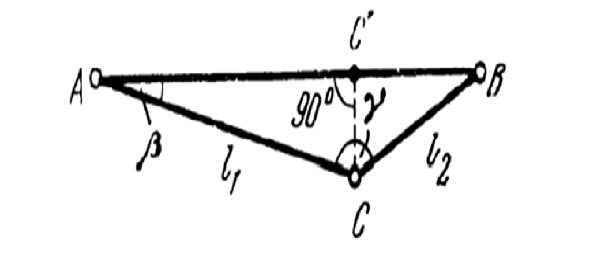
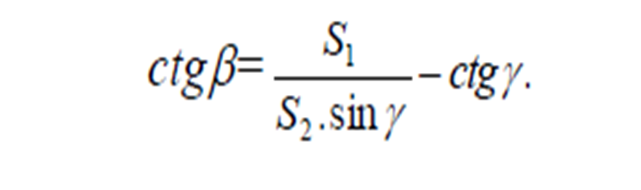
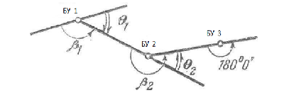
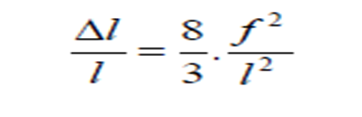
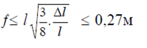
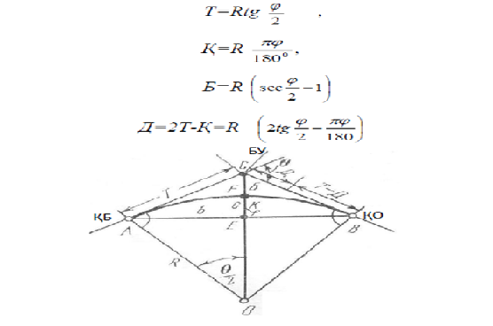
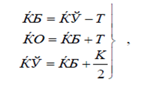
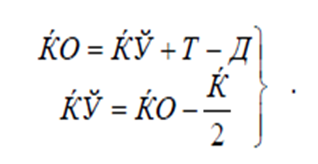

2-маруза Мавзу: Жойда трассалаш
Ишлар таркиби. Жойда трассалаш қуйидаги жараёнлардан ташкил
топган:
1. Трасса лойиҳасини жойга кўчириш;
2. Бурилиш бурчагини аниқлаш;
3. Масофа ўлчаш. Пикетларни режалаш ва пикетлаш дафтарчасини тўлдириб бориш;
4. Доиравий ва ўтиш қайрилмаларини режалаш;
5. Трассани нивелирлаш. Трасса бўйлаб реперларни ўрнатиш.
6. Трассани жойда лойиҳалаш;
7. Трассани геодезик пунктларга боғлаш;
8. Майдонларни ва ўтиш жойларини суратга олиш;
9. Дала материалларини қайта ишлаш. Трасса плани ва профилини тузиш.
Трасса лойиҳасини жойга кўчириш. Жойда трассалаш, жой билан
танишиш ва атрофдаги мавжуд геодезик пунктларни аниқлашдан бошланади.
Лойиҳавий бошланғич маълумотларга асосан жойда бурилиш бурчакларининг ҳолати
аниқлангандан
кейин, трассанинг белгиланган йўналиши кузатилади.
Агарда бурилиш бурчаклари орасида кўриниш бўлмаса, масала анча мураккаблашади. Бу ҳолда
трасса йўналиши қуйидаги усуллар ёрдамида аниқланади.
1. Агарда яқин атрофда геодезик пункт бўлса, трасса йўналиши шу пунктга бўлган йўналиш
орқали аниқланади.
2. Бурилиш бурчагидан жойдаги бирор предметга бўлган йўналишнинг астрономик азимути
аниқланади ва шу йўналиш орқали трасса йўналиши берилади.
3. Трасса йўналишининг азимути гиротеодолит ёрдамида аниқланади.
4. Ишлаб чиқаришда кўпчилик ҳолларда трасса йўналиши магнит азимути ёрдамида берилади.
Баъзи ҳолларда АВ (1-расм) йўналишида бирорта С нуқта белгиланади.

46.1-расм. Трасса йўналишини аниқлашга оид
Агарда с нуқта АВ чизиғида ётмаса, у бурчак қиймати 180°дан
фарқ қилади. Ўлчанган Y бурчак ва S1, S2 томонлар ёрдамида B бурчак ҳисобланади ва АС томон
йўналишидан B бурчак қийматига камайтириб
AB йўналиши аниқланади

Бу ердан кўриниб турибдики, трасса йўналишини аниқлаш учун бурилиш бурчаги орасида
теодолит
йўли ўтказиш кифоя. Сc' қуйидагича
аниқланади:
Трассанинг бурилиш бурчагини аниқлаш. Трассалашда асосан ўнг бурчаклар B1,
B2, (44.2-расм)
ўлчанади. Бурчак ўлчаш хатолиги +0,5' га тенг.

46.2-расм. Трассалашда бурчак ўлчашга оид
Трасса ўнгга қайрилганда бурилиш қуйидагича аниқланади;
Фун= 180°-в1 .
Трасса чапга бурилса
Фan = B1, -180 ° бўлади.
(5)
Трассанинг тўғри, узун қисмида (500-800м бўлганда) створ нуқталар ўрнатилади. Улар Дў
ва ДЧ
да 180° бурчак ўлчаш орқали аниқликда ўрнатилади.
Маофа ўлчашлар. Трассалашда икки хил масофа ўлчаш ишлари бажарилади. Биринчиси: бурилиш
бурчаклари ва створ нуқталари орасидаги масофаларни ўлчаш.
Жой шароитига боғлиқ ҳолда масофа ўлчаш нисбий хатолиги 1:1001:200 бўлади ва у лента
ёки
оптик дальномер ёрдамида ўлчанади. Иккинчиси: пикетлар оралиғи, қайрилма элементларини
режалашда, ҳамда тафсилотларгача бўлган масофаларни ўлчашда бажарилади. Улар асосан лента
билан ўлчанади.
Пикетлар 100м оралиғида ўрнатилади, улардан ташқари плюс нуқталари ва жойнинг характерли
нуқталари белгиланади.
Масофа ўлчашда лентанинг эгилиши Діни қуйидагича ҳисоблаш мумкин:

l/l ни нисбий хатолиги 1/2000 дан ошмаслиги учун

бўлиши керак.
Қайрилманинг бош нуқталарини режалаш. Доиравий эгриликнинг асосий элементлари
(46.3-расм)
қуйидагилардан иборат: Бурилиш бурчаги - ф (жойда аниқланади); Қайрилма радиуси - R; AC = ВС
= Т кесма узунлиги (тангенс); Қайрилма узунлиги - Қ: Биссектриса узунлиги - Б; Домер - Д.
ф ва R қийматлари ёрдамида Т.К.Б ва Д лар қуйидагича ҳисобланади:

46.3-расм. Доиравий эгриликнинг асосий элементлари
Юқоридаги ифодалардан кўриниб турибдики, қайрилманинг ҳамма элементлари радиус R га тўғри
пропорционал.
ҚБ, ҚО ва ҚЎ нуқталари қайрилманинг бош нуқталари ҳисобланади. Буларнинг қиймати қуйидагича
ҳисобланади:

текшириш.

Жойда қайрилма боши яқин пикетдан ҳисобланган қийматни ўлчаб қўйиш билан аниқланади.
Қайрилма ўртасини аниқлаш учун қайрилиш бурчагини иккига бўлиб, шу йўналиш бўйлаб
биссектриса Б қиймати ўлчаб қўйилади.
Текис жойларда пикетлашни режалашда масофа ўлчаш нисбий хатолиги 1:1000 дан, тоғли
жойларда
эса 1:500 дан ошмаслиги керак.